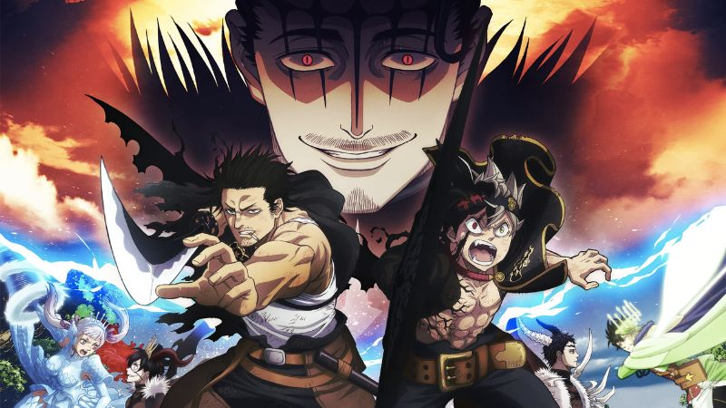
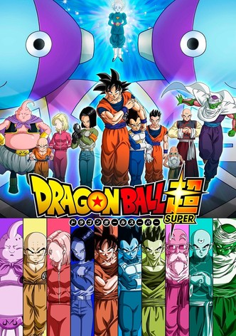

The story follows Takemichi Hanagaki, a 26-year-old temp worker with a gloomy life, who learns that his ex-girlfriend, Hinata Tachibana, has died in a dispute involving the Tokyo Manji Gang. The next day, while returning from a part-time job, Takemichi gets pushed off the subway platform by someone. As he is about to be hit, he jumps twelve years back in time, to the year he was dating Hinata.
Date of release: March 1, 2017
Status : Completed
Attack On Titan
Attack On Titan is set in a world where humanity is forced to live in cities surrounded by three enormous walls that protect them from gigantic man-eating humanoids referred to as Titans; the story follows Eren Yeager, who vows to exterminate the Titans after they bring about the destruction of his hometown and the death of his mother.
Date of release: September 9, 2009
Status : Completed
Black Clover

Set in a world where everyone is given the ability to use magic, the story follows Asta, a young boy born without any magic power who is given a rare grimoire that grants him anti-magic abilities. With his fellow mages from the Black Bulls, Asta plans to become the next Wizard King.
Date of release: June 4, 2015
Status : Ongoing
Dragon Ball Super

The Dragon Ball Super manga picks up the story of Goku and his adventures following the defeat of Majin Buu, but prior to the final chapters involving the 28th World Martial Arts Tournament.
Date of release: June, 2015
Status : Ongoing
Demon Slayer
This fictional world set in early 20th century Taishō-era Japan, man-eating demons roam the land each night. 13-year-old Tanjiro Kamado's world is turned upside down when he returns home one morning to find his entire family murdered save for his sister Nezuko—who has turned into a demon.
Date of release: February 16, 2016
Status : Completed